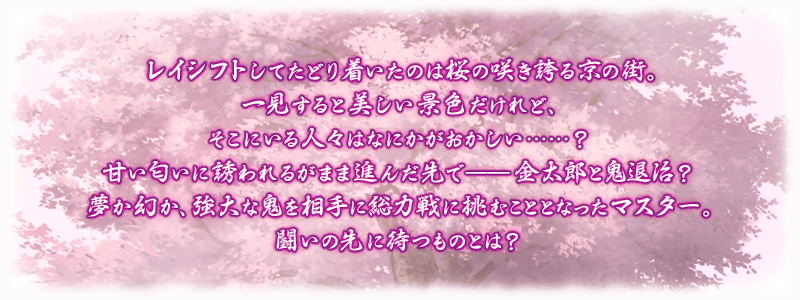
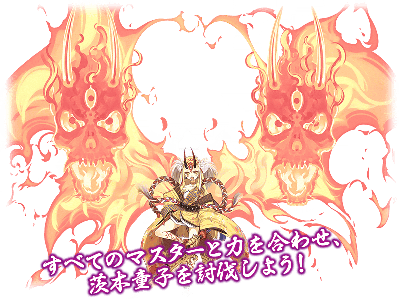
◆活動舉辦期間◆
2017年5月31日(三)17:00～6月8日(四)22:59
◆活動概要◆
舉辦期間限定･高難易度活動「復刻:鬼哭醉夢魔京 羅生門 精簡版」！
以平安時代的京街為舞台推進的故事。
與坂田金時一起以茨木童子的討伐做為目標吧！
本活動會進行與全部的Master一起挑戰討伐茨木童子的特別關卡，鬼哭討伐戰。鬼哭討伐戰，活動期間中會發生複數次。
在鬼哭討伐戰對茨木童子進行攻擊的話，給予的傷害量會轉為傷害點數。依照獲得的傷害點數，可以拿到報酬。
並且，通過每天發生的每日任務通過的話就能取得報酬。
另外，也追加只有通過「終局特異點」及「復刻:鬼哭醉夢魔京 羅生門 精簡版」全部主線關卡的Master才能參加的挑戰關卡。
※本活動為復刻於2016年舉辦的「鬼哭醉夢魔京 羅生門」的「精簡版復刻活動」。
※活動限定概念禮裝與2016年舉辦時同様可以獲得。
◆活動参加條件◆
只限通過「第五特異點 北美神話大戰 第五特異點 合眾為一」的Master才能参加
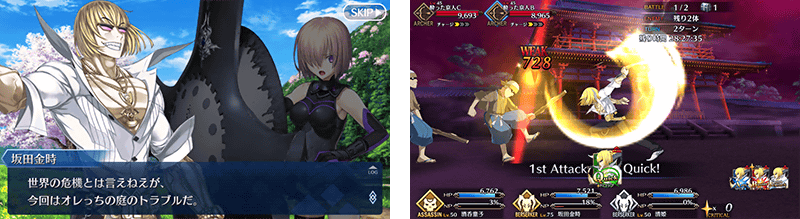
變更點1:在關卡追加新難易度「鬼泣(鬼なかし)級」追加
在「鬼遣級」與「鬼殺級」之間新追加難易度「鬼泣級」。
| 難易度 | 關卡名 |
|---|---|
| 低 ↓ 高 |
鬼遊(鬼あそび)級 |
| 鬼遣(鬼やらい)級 | |
| 鬼泣(鬼なかし)級 NEW!! | |
| 鬼殺(鬼ごろし)級 |
變更點2:就算在茨木童子也能獲得報酬
在復刻:鬼哭醉夢魔京 羅生門 精簡版的茨木童子戰就算隊伍全滅敗北的情況，也能進行傷害點數的加算及報酬獲得。
※另外，請注意從戰鬥選單選擇「撤退」的情況，不會進行傷害點數的加算及報酬獲得。
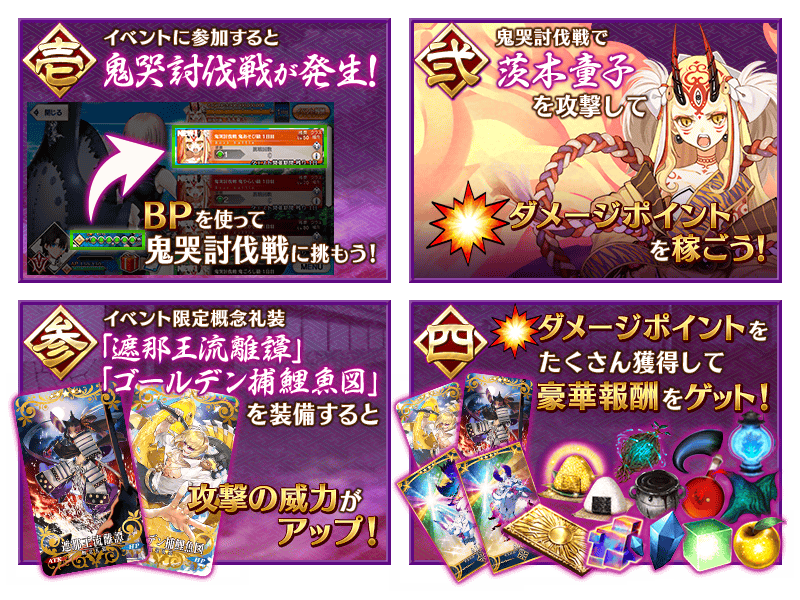
在鬼哭討伐戰中與全部的Master一同以茨木童子的討伐做為目標。
鬼哭討伐戰以「擊退戰」「追擊戰」「繼續戰」的3種類所構成，茨木童子的Total HP會根據出現的關卡而有所變化。
※在全部的關卡皆能獲得傷害點數。
※參加活動時，若茨木童子的Total HP已經變為0則「擊退戰」不會出現。
※傷害點數會在與茨木童子的戰鬥勝利時間點、戰鬥的剩餘回合數變為0的情況、在戰鬥敗北(隊伍全滅)的情況加算。
從戰鬥選單選擇「撤退」的情況不會加算傷害點數。
※在使用BP的活動中，活動期間中等級提升時BP會全回復。
等級提升的BP回復量只到最大上限為止，超過最大上限的份量不會反映。
還有，藉道具回復超過BP最大上限的情況，就算是等級提升也會加算BP，請注意使用BP的活動之間不會進行BP的繼承。
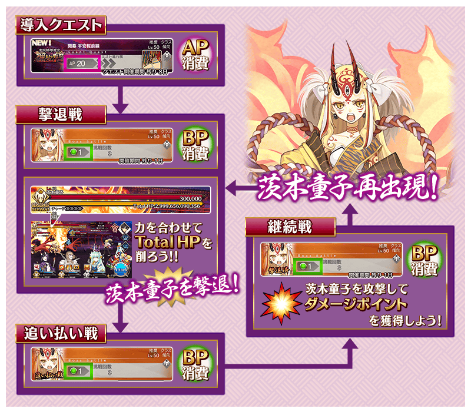
※開發中畫面。
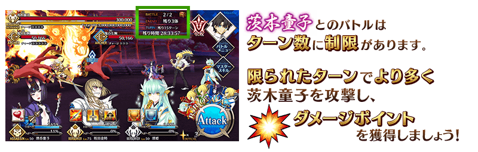
◆報酬獲得方法◆
當每次傷害點數到達一定數以上，在關卡結束時，會自動進行報酬獲得。
可以獲得的報酬清單，能從在管理室(ターミナル)出現的按鈕的「活動報酬畫面」選擇「傷害點數報酬確認」做確認。
◆可用傷害點數獲得的道具◆
| 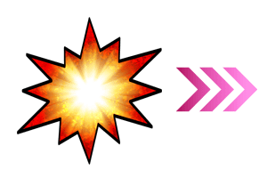 |
【活動限定概念禮裝】 【技能強化素材、靈基再臨素材】 【其他道具】 |
※活動専用道具｢黃金飯糰｣｢力量飯糰｣活動期間結束後會消失。
在鬼哭討伐戰中，滿足特定條件的話會發生能獲得報酬的每日任務。
每日任務以每次茨木童子的出現的時間點區分舉辦期間，期間限定的每日任務。
請注意舉辦期間結束後無法再攻略。
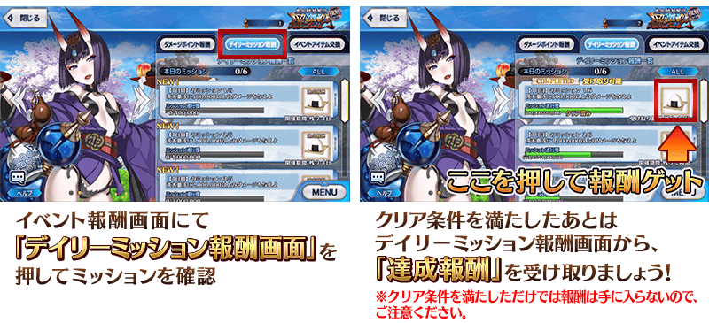
通過每日任務的話可獲得以下的報酬。
※請注意每日任務會以每日交替變更。
|
每天在「撃退戰」結束後會發生「追擊戰」可入手「聖晶石 1個」做為初次通過報酬。 成功撃破第7天(最終日)的茨木童子的話，贈送活動参加者全員「聖晶石 10個」做為撃破報酬！ |
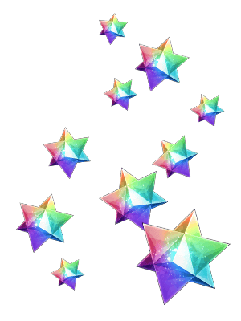 |
- 第1天 5月31日(三)17:00～6月1日(四)22:59
-
任務名 通過報酬 對茨木童子給予500,000傷害 力量飯糰×1 對茨木童子給予1,000,000傷害 力量飯糰×1 對茨木童子給予2,000,000傷害 力量飯糰×1 通過1次關卡 魔力稜鏡×10 通過3次關卡 魔力稜鏡×20 通過5次關卡 魔力稜鏡×30 - 第2天 6月1日(四)23:00～6月2日(五)22:59
-
任務名 通過報酬 對茨木童子給予500,000傷害 力量飯糰×1 對茨木童子給予1,000,000傷害 力量飯糰×1 對茨木童子給予2,000,000傷害 力量飯糰×1 對茨木童子給予3,000,000傷害 黃金飯糰×1 對茨木童子給予5,000,000傷害 混沌の爪×5 通過1次關卡 魔力稜鏡×10 通過3次關卡 魔力稜鏡×20 通過5次關卡 魔力稜鏡×30 - 第3天 6月2日(五)23:00～6月3日(六)22:59
-
任務名 通過報酬 對茨木童子給予500,000傷害 力量飯糰×1 對茨木童子給予1,000,000傷害 力量飯糰×1 對茨木童子給予2,000,000傷害 力量飯糰×1 對茨木童子給予3,000,000傷害 黃金飯糰×1 對茨木童子給予5,000,000傷害 隕蹄鉄×5 對茨木童子給予6,000,000傷害 呼符×1 通過1次關卡 魔力稜鏡×10 通過3次關卡 魔力稜鏡×20 通過5次關卡 魔力稜鏡×30 - 第4天 6月3日(六)23:00～6月4日(日)22:59
-
任務名 通過報酬 對茨木童子給予500,000傷害 力量飯糰×1 對茨木童子給予1,000,000傷害 力量飯糰×1 對茨木童子給予2,000,000傷害 力量飯糰×1 對茨木童子給予3,000,000傷害 黃金飯糰×1 對茨木童子給予5,000,000傷害 無間の歯車×5 對茨木童子給予6,000,000傷害 呼符×1 對茨木童子給予8,000,000傷害 血の涙石×5 通過1次關卡 魔力稜鏡×10 通過3次關卡 魔力稜鏡×20 通過5次關卡 魔力稜鏡×30 - 第5天 6月4日(日)23:00～6月5日(一)22:59
-
任務名 通過報酬 對茨木童子給予500,000傷害 力量飯糰×1 對茨木童子給予1,000,000傷害 力量飯糰×1 對茨木童子給予2,000,000傷害 黃金飯糰×1 對茨木童子給予3,000,000傷害 黃金飯糰×1 對茨木童子給予5,000,000傷害 凶骨×5 對茨木童子給予6,000,000傷害 呼符×1 對茨木童子給予8,000,000傷害 禁断の頁×5 對茨木童子給予10,000,000傷害 黒獣脂×5 通過1次關卡 魔力稜鏡×10 通過3次關卡 魔力稜鏡×20 通過5次關卡 魔力稜鏡×30 - 第6天 6月5日(一)23:00～6月6日(二)22:59
-
任務名 通過報酬 對茨木童子給予500,000傷害 力量飯糰×1 對茨木童子給予1,000,000傷害 黃金飯糰×1 對茨木童子給予2,000,000傷害 黃金飯糰×1 對茨木童子給予3,000,000傷害 黃金飯糰×1 對茨木童子給予5,000,000傷害 竜の牙 ×5 對茨木童子給予6,000,000傷害 呼符×1 對茨木童子給予8,000,000傷害 鳳凰の羽根 ×5 對茨木童子給予10,000,000傷害 蛮神の心臓 ×5 通過1次關卡 魔力稜鏡×10 通過3次關卡 魔力稜鏡×20 通過5次關卡 魔力稜鏡×30 - 第7天(最終日) 6月6日(二)23:00～6月8日(四)22:59
-
任務名 通過報酬 對茨木童子給予500,000傷害 黃金飯糰×1 對茨木童子給予1,000,000傷害 黃金飯糰×1 對茨木童子給予2,000,000傷害 黃金飯糰×1 對茨木童子給予3,000,000傷害 黃金飯糰×1 對茨木童子給予5,000,000傷害 世界樹の種 ×5 對茨木童子給予6,000,000傷害 呼符×1 對茨木童子給予8,000,000傷害 虚影の塵 ×5 對茨木童子給予10,000,000傷害 八連双晶 ×5 對茨木童子給予12,500,000傷害 竜の逆鱗 ×5 對茨木童子給予15,000,000傷害 伝承結晶 ×1 通過1次關卡 魔力稜鏡×10 通過3次關卡 魔力稜鏡×20 通過5次關卡 魔力稜鏡×30
◆超值攻略方法・其1◆
裝備能以活動道具交換和傷害點數報酬入手的活動限定概念禮裝「遮那王流離譚」的話，在「復刻:鬼哭醉夢魔京 羅生門 精簡版」中自身的攻擊威力會提升。
另外，裝備能以傷害點數報酬入手的活動限定概念禮裝「ゴールデン捕鯉魚図」的話，在「復刻:鬼哭醉夢魔京 羅生門 精簡版」中我方全體＜含候補＞的攻擊威力會提升。
獲得活動限定概念禮裝，爭取更多的傷害點數吧！
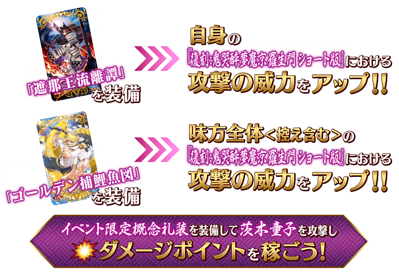
◆超值攻略方法・其2◆
裝備限期概念禮裝的話，活動專用道具「鬼瓢簞」的獲得數會提升。
※請注意在各關卡的道具掉落率並非100%。
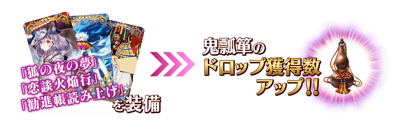
| 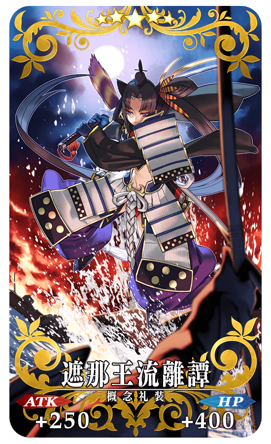 |
★★★★★SSR |
| 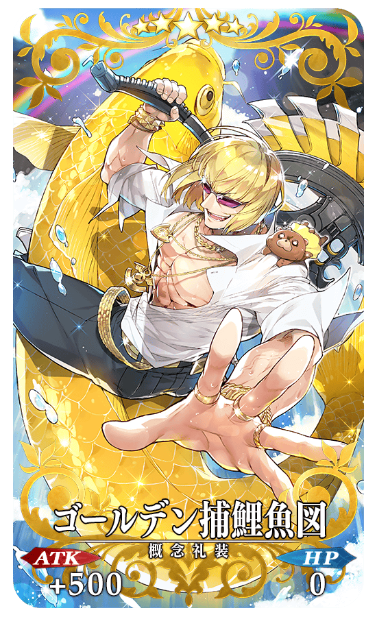 |
★★★★★SSR ゴールデン捕鯉魚図 ATK 500(最大:2000) HP 0 技能 自身的NP以30%累積狀態開始戰鬥 ＋ 登場時獲得星星15個(1次) ＋ 我方全體＜含候補＞在復刻:鬼哭醉夢魔京 羅生門 精簡版中的攻擊威力提升50%【『復刻:鬼哭醉夢魔京 羅生門 精簡版』活動期間限定】 |
◆交換方法◆
交換期間：2017年5月31日(三)17:00～6月14日(三)15:59
※黃金飯糰與力量飯糰自6月8日(四)23:00開放交換。
※交換期間結束後「鬼瓢簞」「黃金飯糰」「力量飯糰」會消失。
自達文西工房内的「活動道具交換」，可用活動専用道具交換以下的道具。
◆可用鬼瓢簞交換的道具◆
| 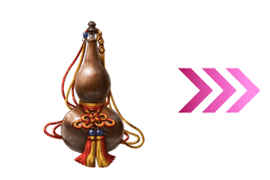 |
【活動限定概念禮裝】 【技能強化素材、靈基再臨素材】 【靈基再臨素材】 【其他道具】 |
◆可用黃金飯糰・力量飯糰交換的道具◆
| 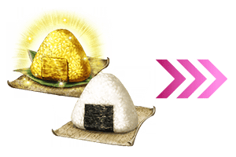 |
|
以通過「終局特異點」及「復刻:鬼哭醉夢魔京 羅生門 精簡版」的主線關卡的Master為對象開放高難易度關卡「挑戰關卡」。
初次挑戰關卡時可獲得豪華報酬。
挑戰關卡就算在通過後也不會消失，能無數次挑戦，可以變更Servant和概念禮裝的組合後再次挑戰。
※關卡通過報酬、戰利品、MasterEXP、魔術禮裝EXP、絆點數只限在初次通過時獲得。
◆挑戰關卡参加條件◆
只限通過「終局特異點」及「復刻:鬼哭醉夢魔京 羅生門 精簡版」全部主線關卡的Master才能参加
◆挑戰關卡初次通過報酬◆
呼符 1枚
Servant的HP及ATK的強化上限值調高至最大2,000。
隨著上述的開放，目前為止的初期值從990變更至1,000。
※關於詳情請在下個項目的「Servant強化素材追加新道具！」確認。
※強化上限值至2,000的開放是Servant的強化值達到1,000後自動開放。
※5月31日(三)的維修後，在最初進行登入時，根據HP及ATK的強化值達到990的Servant數量，配發「英靈結晶・黃昏之芙芙ALL★1(HP)」與「英靈結晶・拂曉之芙芙ALL★1(ATK)」至禮物箱。
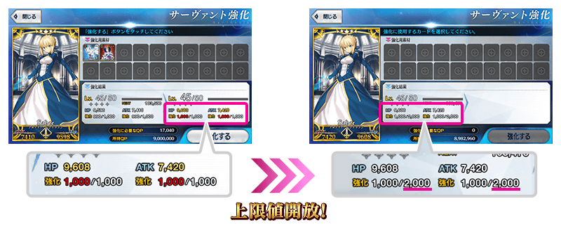
自期間限定活動「復刻:鬼哭醉夢魔京 羅生門 精簡版」追加種類新道具2！
新上限值開放後，在Servant的HP及ATK的強化值1,000以上做為素材所必需的道具。
能在期間限定活動「復刻:鬼哭醉夢魔京 羅生門 精簡版」做為傷害點數的達成報酬入手。
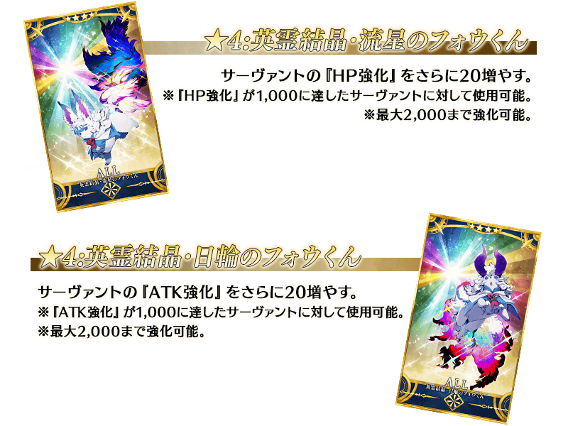
◆關於強化值超過1,000的Servant強化◆
★4的芙芙只限Servant的HP及ATK的強化值1,000以上的情況才能在強化使用，強化值未滿1,000的情況無法在強化使用。
另外，請注意★1～★3的芙芙在強化值1,000以上的強化無法使用。
※請注意對強化值接近1,000的Servant使用★1～★3的芙芙進行強化時，Servant的強化值超過累計1,000的情況，超過的強化值不會反映。
| 強化 類別 |
名稱 | 0～990 | 1,000～1,980 |
|---|---|---|---|
| HP | ★1：英靈結晶・黃昏之芙芙 | 可使用 | 不可使用 |
| ★2：英靈結晶・閃耀之芙芙 | 可使用 | 不可使用 | |
| ★3：英靈結晶・明星之芙芙 | 可使用 | 不可使用 | |
| ★4：英靈結晶・流星之芙芙 NEW!! | 不可使用 | 可使用 | |
| ATK | ★1：英靈結晶・拂曉之芙芙 | 可使用 | 不可使用 |
| ★2：英靈結晶・輝煌之芙芙 | 可使用 | 不可使用 | |
| ★3：英靈結晶・太陽之芙芙 | 可使用 | 不可使用 | |
| ★4：英靈結晶・日輪之芙芙 NEW!! | 不可使用 | 可使用 |
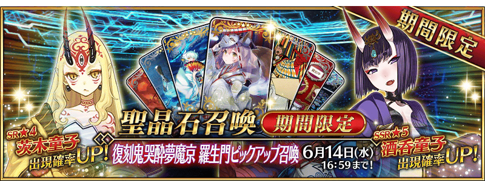
◆「復刻鬼哭醉夢魔京 羅生門Pick Up召喚」期間◆
期間：2017年5月31日(三)17:00～6月14日(三)15:59
以期間限定舉辦「復刻鬼哭醉夢魔京 羅生門Pick Up召喚」！
變更於2016年舉辦的鬼哭醉夢魔京 羅生門Pick Up召喚一部份内容進行復刻。
「★5(SSR)酒呑童子」以期間限定登場！
另外「★4(SR)茨木童子」Pick Up！
詳情請在聖晶石召喚畫面左下的召喚詳細確認。
※酒呑童子在Pick Up期間結束後不會追加到故事召喚。
裝備期間限定概念禮裝「★5(SSR)狐の夜の夢」「★4(SR)恋談火焔行」「★3(R)勧進帳読み上げ」的話活動道具「鬼瓢簞」的掉落獲得數會増加。
Pick Up期間中，期間限定Servant、Pick Up Servant、期間限定概念禮裝的出現機率提升！
10次召喚中確定1張★4(SR)以上和確定1位★3(R)以上的Servant！
※確定★4(SR)以上包含Servant和概念禮裝。
※所謂「出現機率提升」意指比同稀有度的Servant及概念禮裝出現機率更高的設定。
開放茨木童子的幕間物語！
◆開放時間◆
2017年5月31日(三)17:00～
◆關卡開放條件◆
通過第七特異點「絕對魔獸戰線巴比倫尼亞」的狀態、茨木童子的絆Lv.3以上、強化至再臨第二階段的話開放關卡。
◆關卡通過報酬◆
聖晶石 1個
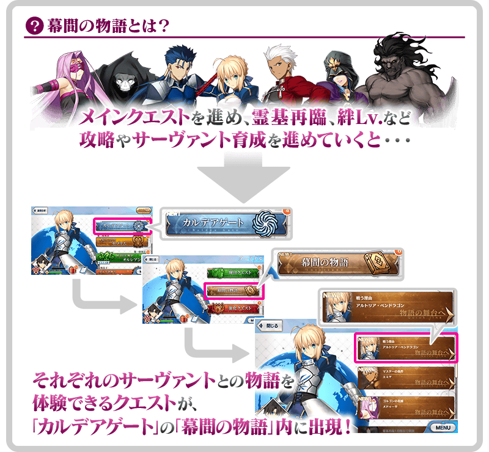
※達成開放條件後會在迦勒底之門內的「幕間物語」出限關卡看板。
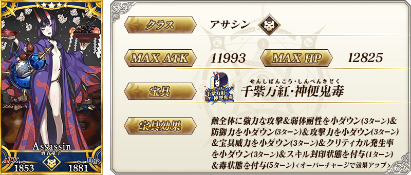

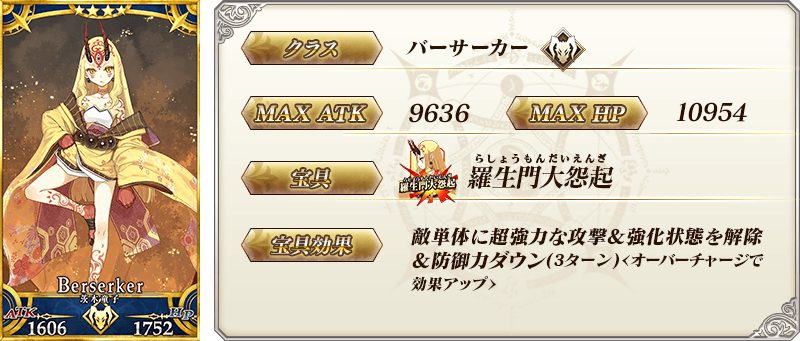
| 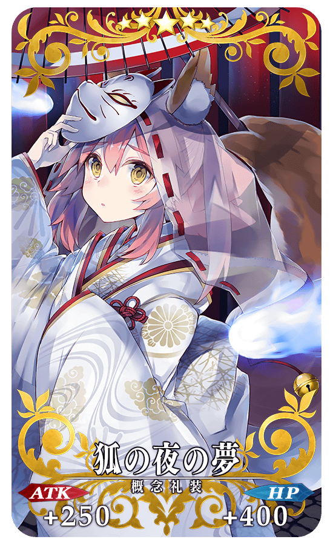 |
★★★★★SSR |
| 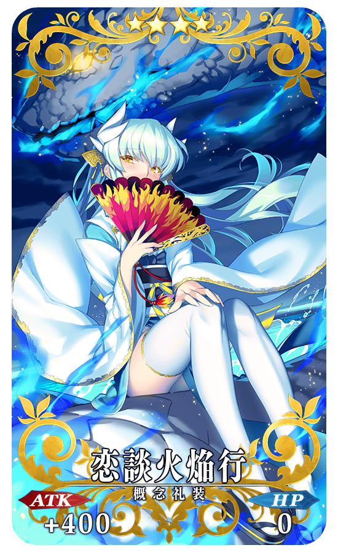 |
★★★★SR |
| 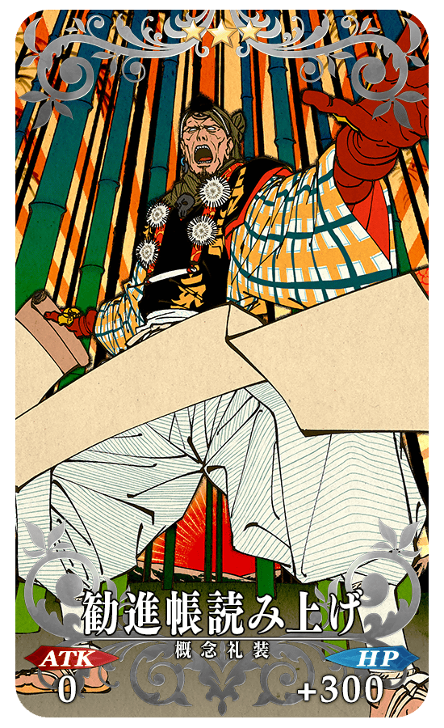 |
★★★R 勧進帳読み上げ ATK 0 HP 300(最大:1500) 技能 對自身賦予防禦弱體無效狀態1次 ＋ 鬼瓢簞的掉落獲得數增加1個【『復刻:鬼哭醉夢魔京 羅生門 精簡版』活動期間限定】 |
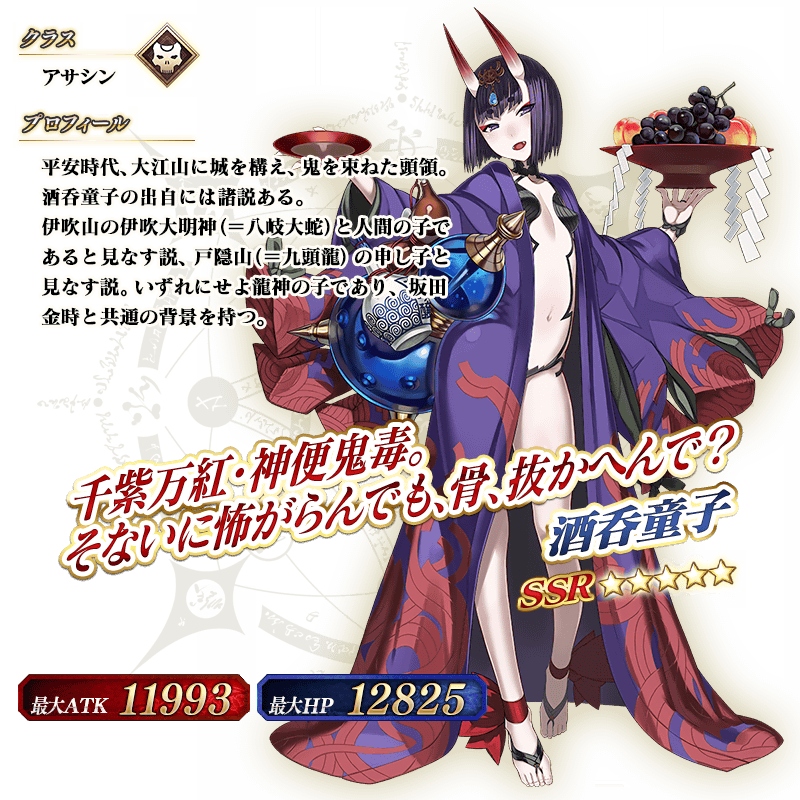